Your round, your customers and your money, all in one place. A friendly guide to getting started.
In this guide
What Splash Out does
Setting up (once)
Adding your customers
A normal working day
Booking customers in
When someone skips
Getting paid
Looking after your customers
The Stats screen
The Round Sheet
The More menu
Keeping your data safe
Quick answers
1What Splash Out does
Splash Out replaces your notebook or spreadsheet. It does six jobs for you:
Remembers your customersNames, addresses, prices, notes and phone numbers.
Plans your roundShows who is next, day by day, in round order.
Logs each cleanOne tap: cleaned and paid, not paid, skipped.
Tracks who owes youEvery unpaid clean, oldest first.
Shows how you're doingWeekly targets, tax year income and more.
Messages customersOpens WhatsApp with a ready-made message.
There are five tabs along the bottom (or the top on an iPad):
Statshow you're doing
Roundwho's next
Customerseveryone
Owedwho owes you
Moreeverything else
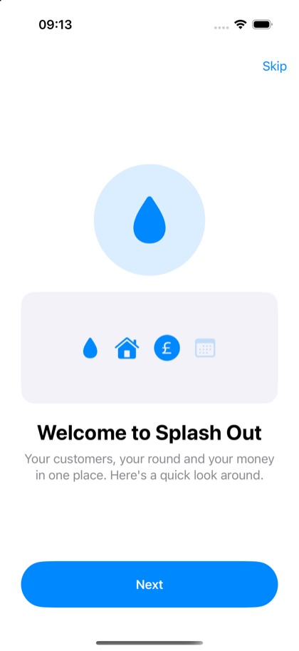
The quick tour shown the first time you open the app
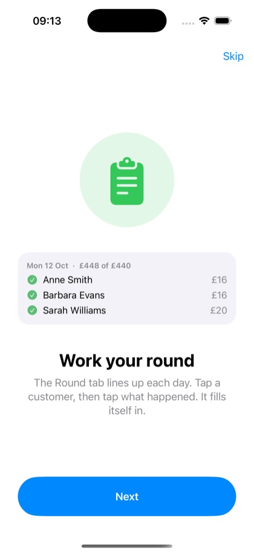
Each step has a little animation
Quick tour. A short animated walk-through opens the first time you start the app. Run it again any time from More → Quick tour.
2Setting up (once)
Do this first. It takes about five minutes and makes the Round screen work properly.
Add your team. Go to More → Settings → Team. Type each person's name and tap Add team member.
Make your crews. Under Crews and day targets tap Add a crew…. A crew is a combination of people who work together, such as "Sam + Alex" or just "Sam". Give each crew a day target: how many pounds of work it aims to do in a day.
Set your usual week. Under Usual week choose which crew works on each day. Leave days you don't work as "Not working".
Why this matters. The usual week and the targets are how the app knows how many customers to line up for each day.
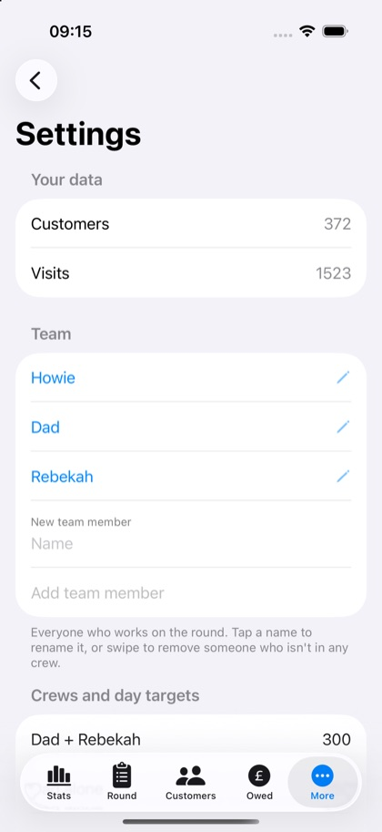
Settings: your team, crews and usual week
3Adding your customers
Bring in a list you already have
On the Customers tab tap the download arrow (top left) and pick a spreadsheet saved as a CSV file. Match each column to a field (Name, Address, Price…) and tap Import.
Or add one at a time
On the Customers tab tap +.
Fill in the name, address, phone and price. Tap Import from Contacts at the top to copy a name, number and address from your phone's Contacts.
Choose where they go in the round with Place in round, then tap Save.
Good to know. A new customer starts as Not started. They show greyed out on the Round, as a reminder, and aren't counted in the day's total. Tap them and choose Start when they're ready. (Their first logged clean also makes them Active.)
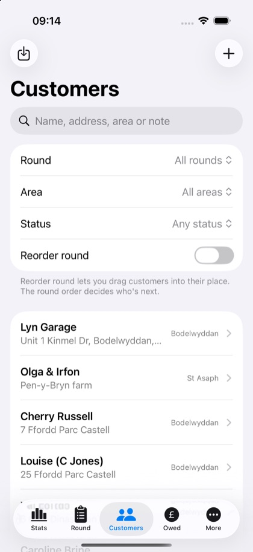
The Customers tab: search, filter and reorder
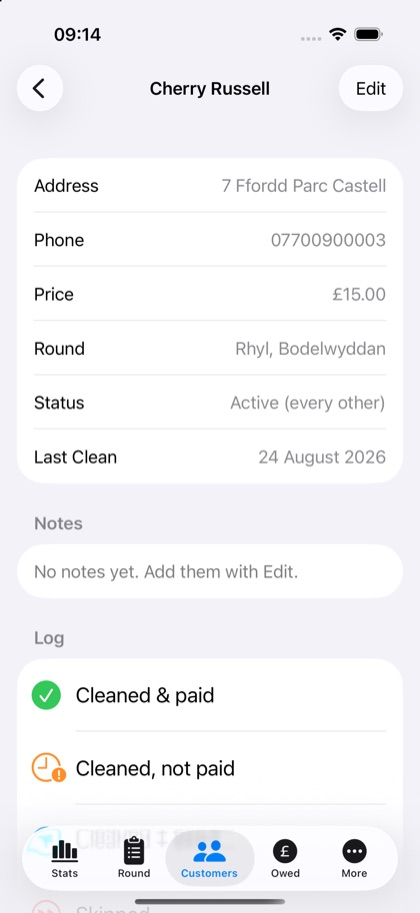
A customer's page
Handy extras on each customer
Every other clean: for customers you only visit every other round.
Front only: a reminder that only the front is done.
Notes: gate codes, pets, parking. They show up when you tap the customer on the round.
Contact by: WhatsApp or Ring, so you get the right button.
4A normal working day
Open the Round tab. It lists customers day by day, in the order you work them. The date bar stays at the top as you scroll, so you always know which day you're looking at.
Tap the customer you're at. A panel opens with their address, notes and anything they owe.
Tap what happened:
Cleaned & paid: done, and they paid.
Cleaned, not paid: done, they'll pay later. It goes on the Owed list.
Cleaned + extra…: for something extra (conservatory roof) or less (front only). Add a note.
Skipped: you couldn't do them today. They go to the back of the round.
Not due: for every-other customers on their off round.
Other date or amount…: for logging a clean from another day, or when they paid a different amount.
Made a mistake? A bar appears at the bottom for a few seconds. Tap Undo.
The list looks after itself. Each clean or skip moves the round on, and the list refills. Customers you've just cleaned drop to the back and come round again in about five weeks.
Quick way. On the Customers tab, swipe a row right for Paid or Not paid, or left for Skipped.
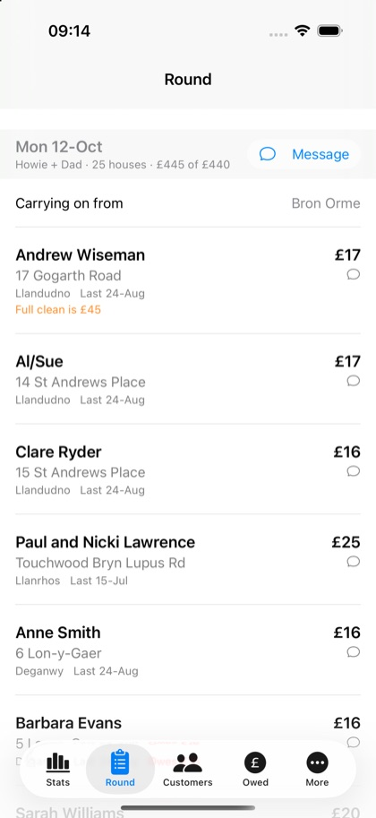
The Round: one day at a time, with the date bar pinned
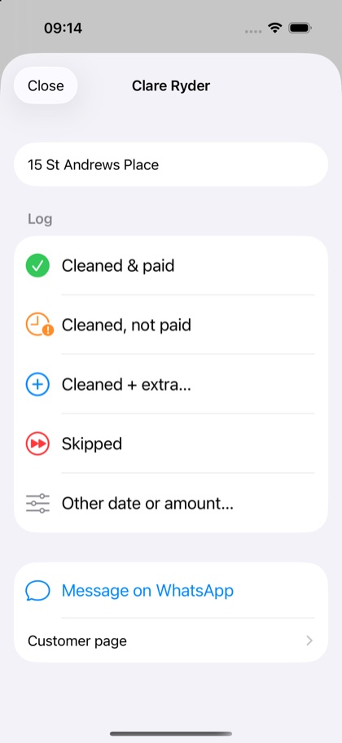
Tap a customer, then tap what happened
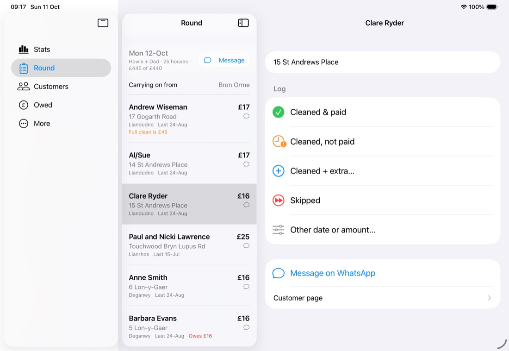
On an iPad the round and the logging panel sit side by side
New customers show greyed out
Someone who hasn't started yet appears in the round, greyed out, at the place where they belong. They don't count towards the day's total. Tap them and choose Start … put them on the round to make them active.
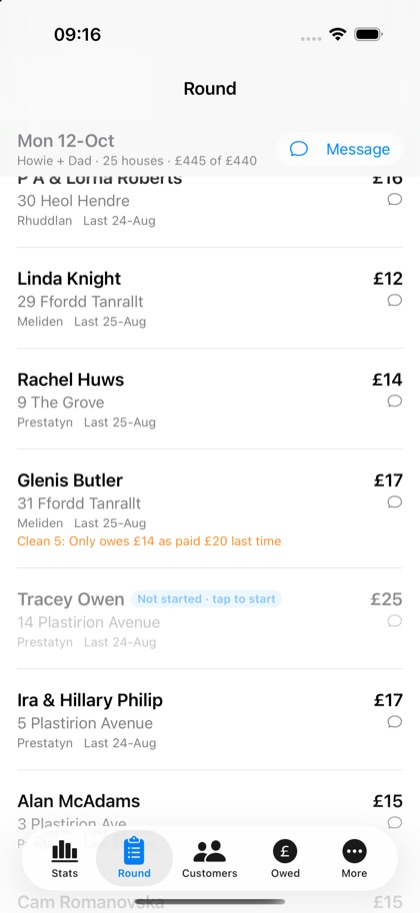
A greyed-out customer waiting to be started
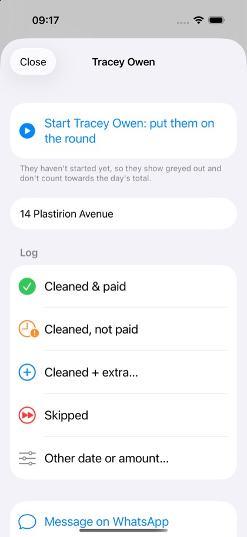
One tap puts them on the round
5Booking customers in
When you book people in, let them know which day you're coming.
On the Round tab, find the day and tap Message on its date bar.
You'll see the message ready to go. Tap Message next. WhatsApp opens with the message filled in for that customer.
Press Send in WhatsApp, then come back and tap Message next again. Each customer you've done gets a tick.
The message fills in each customer's name and the day, for example "Hi Anne, we're planning to clean your windows on Tuesday 13 October." Change the wording any time in More → Settings → WhatsApp message.
Phone numbers. A customer with no number shows Add number from Contacts on their page. Tap it and pick them from your Contacts. WhatsApp itself makes you press Send each time, so the app can open every message ready for you but can't send them for you.
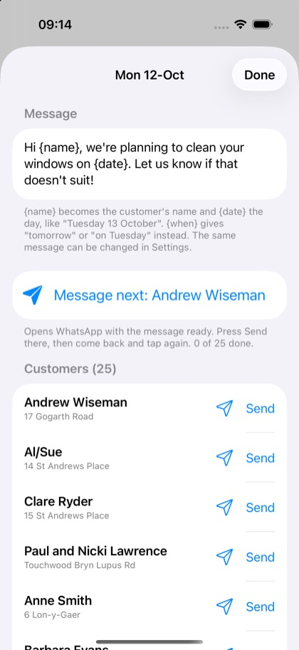
The Message sheet: one tap per customer
6When someone skips
Mark them Skipped when you get there. They move to the back of the round, and the next customers move up to fill the day, so you don't lose the work.
Those customers weren't in your original message, so the day's Message button now says something like Message · 3 new. Tap it, and Message next takes you through just the new ones.
Owes you money? If you skip someone who still owes you from an earlier clean, the app asks you first, in case you want to collect before moving on.
7Getting paid
The Owed tab lists everyone with an unpaid clean, oldest first, with the total at the top.
Tap the customer.
Tap Record payment… and type what they paid.
Save. The money is taken off their oldest unpaid cleans first. Part-payments work too.
You can also reach Record payment from any customer's page.
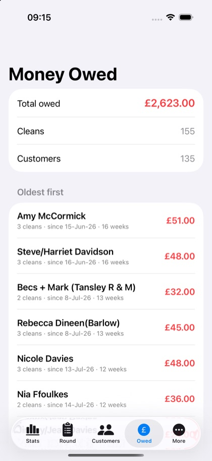
The Owed tab, oldest first
8Looking after your customers
Find someone
On the Customers tab use the search bar (name, address, area or note). You can also filter by Round, Area or Status.
Change their details
Tap the customer, then Edit. Changing a price keeps a record of the old one.
Move someone in the round
On the Customers tab switch on Reorder round and drag them into place. Handy when a new street opens up.
Cancel a customer
Open their page, scroll down and tap Cancel this customer…. If they still owe you money, the app tells you first. Their history stays, and what they owe stays on the Owed list.
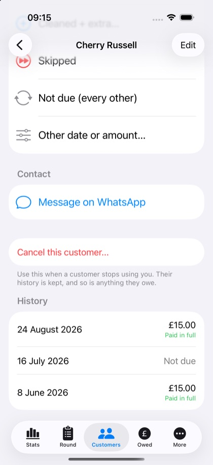
Cancelling is at the bottom of a customer's page
Find cancelled customers
On the Customers tab choose Status → Cancelled. If they come back, open them and tap Reactivate this customer.
A new person has moved into a cancelled customer's house
Open the cancelled customer's page and tap Someone new has moved in…. A new customer form opens with the address, round, area, price and notes already filled in. Type the new person's name and number and save. They go in the round right after the old customer, and start as Active.
Your stats stay right. The old customer keeps their own history and anything they owed. The new person starts fresh, so cleans, skips, "last cleaned" and what they owe are never mixed up with the person before them.
Other statuses
Paused: away for a while. Not on the round until you reactivate them.
Leaving: still being cleaned, but flagged as going.
9The Stats screen
The first tab gives you the big picture at a glance.
This weekWork done against your weekly target.
TodayToday's work against the crew's day target.
Tax yearEverything you've earned since 6 April, paid or not.
Money owedTotal waiting to be paid.
Round valueWhat one full round of customers is worth.
Average per houseWhat you charge for the average clean.
Houses per workdayHow many houses you do on a working day.
PaceHow many weeks between cleans, on the current plan.
Skip rateHow often visits end up skipped.
Price rises dueCustomers who haven't had a rise in two years.
Below the cards, a chart shows the last twelve weeks. Green bars hit the target, orange bars fell short.
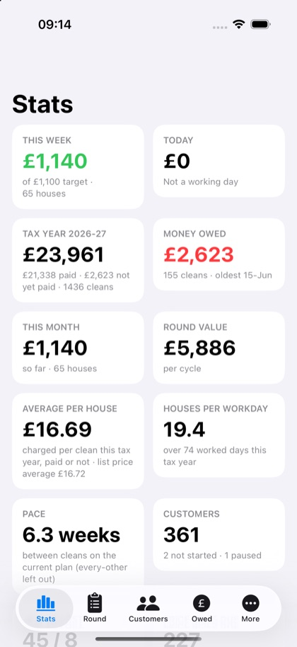
The Stats screen
10The Round Sheet
If you miss the old spreadsheet, this is it: your whole round on one page.
Open More → Round Sheet. There's a tab for each of your rounds, with every customer in round order, the area colours down the side, the price in yellow, and a pair of columns for each time round: Clean 1 / P1, Clean 2 / P2 and so on. The first of each pair is the date, the second is what they paid.
— means skipped or not due that time round.
An orange owes means cleaned but not paid yet.
Scroll sideways for older cleans. The names and prices stay put, and Go to latest jumps to the newest.
Tap any customer's row to open their page.
Cancelled customers are hidden unless you switch on Show cancelled.
It's a view only: log cleans on the Round tab as usual and they appear here.
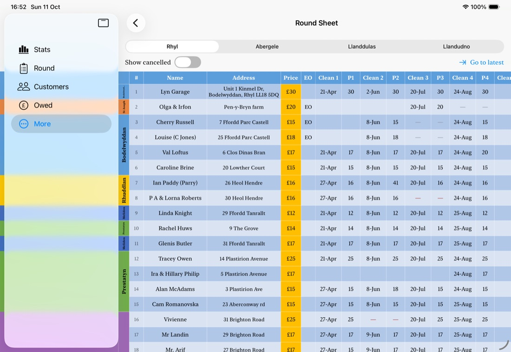
The Round Sheet, laid out like your spreadsheet
11The More menu
WeeklyEach week against its target.
Tax YearMonth by month totals. Share a file for your accounts.
Price RisePreview a rise for every customer, then apply it in one go.
Frequent SkipsCustomers who skip a lot.
ChecksCustomers paying under their price, and dates worth a second look.
DiaryA calendar. Tap a day to mark a holiday or change the crew.
TipsRecord tips. They're never counted as income.
ExportsCustomer list, tax year income list and a report for analysis.
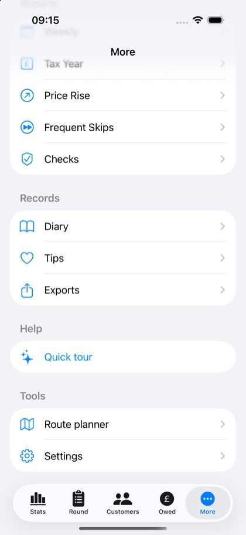
The More menu
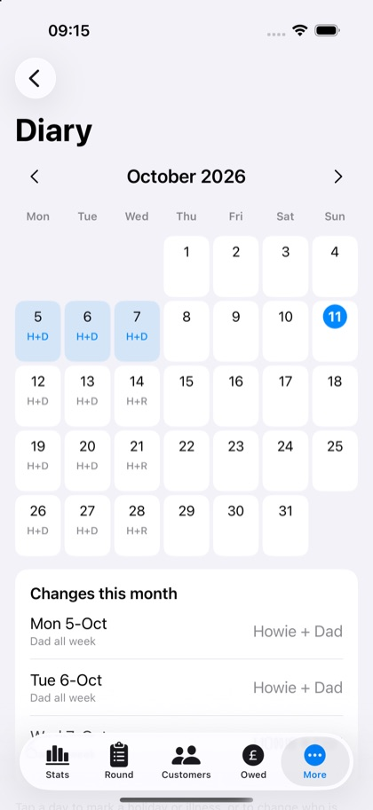
The Diary calendar
Share your working days
In Settings → Calendar, switch on Keep a calendar up to date. Splash Out adds a calendar to your phone showing who works each day (no money or customer details). Share it from the Calendar app with the people who need to see it. Switching it off removes it.
12Keeping your data safe
Your round lives on your device, so it's worth knowing how it's protected.
Automatic, every day
Each day you use the app, it saves a full copy of everything on the phone. The last 14 days are kept. Find them in the Files app under On My iPhone → Splash Out → Backups → Daily. More → Settings → Backup shows when the last one was made, and Back up now makes one straight away.
A backup folder, so a copy leaves the phone (set up once)
The daily copies are on the same phone, so they don't help if the phone is lost or broken. Fix that once: go to More → Settings → Backup → Choose a backup folder… and pick a folder in iCloud Drive or OneDrive (make one first in the Files app, for example "Splash Out Backups"). From then on, each day's copy is saved there automatically, and the newest 30 are kept. Settings shows when the last one was copied, and turns orange if it stops working.
Until you've chosen a folder, an orange reminder appears at the top of Stats once a month.
Your phone's own backup
Switch on iCloud Backup for the phone (Settings → your name → iCloud → iCloud Backup). It saves the app and its data every night while charging, and it brings everything back on a new phone.
Putting a backup back
More → Settings → Import round data…, then pick the backup file. This replaces what's in the app, and the app saves a copy of what was there first.
What deletes your data. Deleting the app from the phone, and Import or Clear history in Settings (both ask first and save a copy first). Updating or re-signing the app does not touch your data.
13Quick answers
A customer is greyed out on the Round list
They haven't started yet. Tap them and choose Start … put them on the round.
A customer isn't on the Round list
Check their status. Paused and cancelled customers don't appear. Someone cleaned in the last five weeks won't appear until their turn comes round.
The Round list changed overnight
It's recalculated every day from who you've cleaned or skipped, so it always reflects where you've got to.
I logged the wrong thing
Tap Undo straight away. Later on, open the customer, find the visit under History and swipe it to delete.
A day shows more than its target
That's on purpose. Each day is filled until it reaches the target plus a little extra, so you've always got enough lined up.
The WhatsApp button wants a number
Tap Add number from Contacts on the customer's page and choose them.